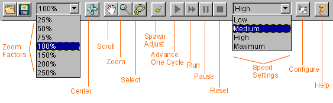

1. Editor
2. Simulator
 a. Interface
a. Interface
 b. Usage
b. Usage
 c. From sims to evals
c. From sims to evals
3. Evaluation Tools
4. An Example Session
5. Algorithms
Simulator Interface
The Menus in the Simulator are as follows:
FILE | ||
| for opening a map file (*.infra) or a simulation file (*.sim) |
[Ctrl + O] | |
| for saving a map or simulation | [Ctrl + S] | |
| for saving a map under a different name than its last save | ||
| for editing additional info on a map | ||
| for closing the Simulator window | [Ctrl + W] | |
| for quitting GLD | [Ctrl + Q] | |
SIMULATION | ||
| minimal advance of the simulation | [Ctrl + D] | |
| continuously advance the simulation | [Ctrl + R] | |
| stop, but not reset the simulation | [Ctrl + U] | |
| halt and reset the simulation | [Ctrl + P] | |
| Default setting: Medium | ||
STATISTICS | ||
| open Statistics window with info on this map | [Ctrl + T] | |
| Display graphic on the selected statistics for whole map or selected nodes (select nodes with config panel) |
||
| To overlay junctions with color indicating the traffic density, darker signifying denser |
||
OPTIONS | ||
| switch animation on/off (significantly increases speed) | ||
| switch counter on status bar on/off | ||
| Co-learning can only be chosen in conjunction with some traffic light control algorithms |
||
| open the editor window | [Ctrl + E] | |
| general configuration | ||
HELP | ||
| aid for the common user | ||
| precise guide to the GLD code | ||
| the GNU Public License | ||
| opens GLD Project Website in your favorite browser | ||
| a little note about GLD |
The Simulator's Toolbar contains the following:
- The Zoom Box - displays current zoom factor (initialized at 100%) and allows adjustment between values of:
- 25%
- 50%
- 75%
- 100%
- 150%
- 200%
- 250%
- The Tool Box - the tools available in the Simulator (initial tool: Zoom Tool) are selectable here:
- Zoom - the Tool for manually zooming to the above mentioned zoom factors
- Select - the Tool for selecting nodes or roads
- The Do One Step Button: minimal advance of the simulation
- The Run Button: continuously advance the simulation
- The Pause Button: stop, but not reset the simulation
- The Stop Button: halt and reset the simulation
- The Speed Box: shows current speed setting and lets user choose one of:
- Low
- Medium
- High
- The Statistics Button: evaluate the data obtained from running the simulation on this map up to now
- The Toggle View Button: switch animation on/off
- Help button: quick access to the documentation